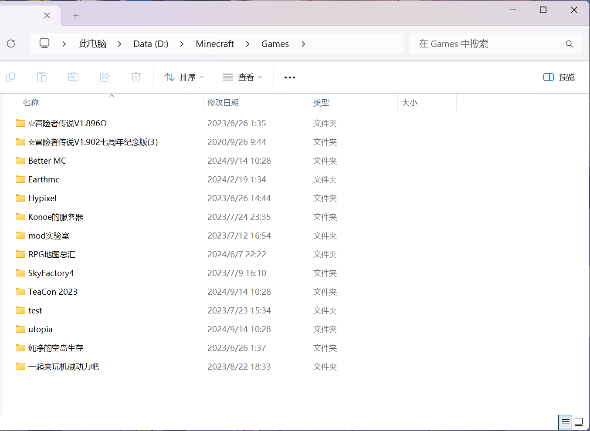

MC游戏下载
*此篇教程主要针对从未接触或下载过Minecraft Java版的玩家
*此篇教程图文有些多，请耐心等待加载~
零、序
mc的下载主要包括 本体游戏版本jar文件 和 Java环境部署。
目前游戏版本文件主要是从 官方启动器（Minecraft Launcher） 和各 **第三方启动器（如PCL2、HMCL、BakaXL、MultiMC）**内下载，但因为国内网络的限制，官方启动器在进行 登入验证 的步骤时，部分区域或部分网络可能无法正常通过或启动游戏。因此本篇主要介绍通过 第三方启动器 来进行游戏文件的下载方法。
一、主流第三方启动器下载
1. 准备工作
在下载第三方启动器之前，最好要给之后下载的MC相关资源新建一个文件夹，这样能够方便之后的 游戏版本和整合包 管理。

就像这样！
这个文件夹的位置最好不要在 系统盘（C盘）里，也不要放在桌面上，最好放在 D盘 之类的硬盘空间里，以避免挤占系统资源。
之后下载到的启动器就放在 启动器 文件夹里。
2. 下载启动器
在下载之前，最好是根据 个人习惯和偏好 来选择启动器。对于从未接触过Java版的MC，建议选择PCL2启动器。PCL2是目前对于新手玩家操作最为友好的启动器。
PCL2启动器下载地址：
https://ifdian.net/p/e5c821a4b1ab11eb879b52540025c377
或
https://afdian.net/p/e5c821a4b1ab11eb879b52540025c377
当然如果你想下载其他启动器，可以去 MCNav 看看：
MCNav | MC导航网 | Minecraft 网址导航站 | MC工具大全
下载来之后，将启动器应用程序解压到文件夹里

二、下载游戏版本文件
1. 分类和定位游戏核心(.minecraft)
在下载游戏版本文件之前，我们要先定位一下 游戏核心，也就是 .minecraft 文件夹**（前面的”.“不能漏！）**。在Java版中，MC游戏本体所能够访问和更改的文件范围就是在这个 .minecraft 文件夹里面。
首先说明一下，因为MC的游戏版本十分多且复杂，且很多模组都是有对应的版本限制的，加上有不少刚接触Java版的玩家并没有很明确的 版本概念，很多时候都会”为了方便”，把 原版、模组端 以及 整合包 都下载到一个 .minecraft 文件夹里。等到后面下的游戏版本多了，可能都很难找到对应的游戏版本，这样十分不利于后面的游玩。
因此个人建议，最好在下载之前就把 游戏版本 给进行一个划定和预分类，把原版的下载到堆放原版的 .minecraft 文件夹，整合包的就下载到堆放整合包的 .minecraft 文件夹，主玩原版生存辅助类的模组就相应再创建一个新的文件夹等，诸如这样。

这里面的文件夹里面都有且只有一个.minecraft文件夹
我们在 游戏本体 文件夹里再 新建文件夹，比如我这个文件夹主要下载的是 原版MC，那么我就把它命名为 原版，然后在这个文件夹里再 新建文件夹，重命名为 .minecraft 。这样我们创建了一个 游戏核心。

接下来我们就在启动器里定位游戏核心。
打开PCL2启动器，按顺序分别点开：“版本选择” → “添加已有文件夹”
然后选择对应的.minecraft文件夹，点击”选择文件夹“，

这样我们就成功创建和定位游戏核心了。
2. 下载游戏版本文件
比如下载1.21.1版本，我们就点击最上面的 下载，选择 自动安装，然后在 正式版 里面找到 1.21.1，然后直接点击 开始安装，等待下载完成就可以了。

静候下载吧~
依次类推，下载其他版本也是一样同样的步骤。
你可能已经注意到了，在 安装预览 的界面中，除Minecraft以外，还有其他的可选项（Forge、Neoforge、Fabric、Optifine），这些在下一章节 Mod安装 里会详细展开。
三、启动游戏之前的准备工作
在启动游戏之前，我们还要完成Java环境的部署。
在以前，Java部署通常都是要去 Oracle官网 去下载对应jdk版本的安装包的。不过现在，大多数的启动器都支持在 启动游戏 时检查并下载Java环境。因此这里就不用再进行手动部署了。
我们可以在 设置 → 启动选项 → 游戏Java 里查看电脑上安装的Java版本。
仍然遇到了困难？在这里查看 手动部署Java环境及其注意事项。
进入游戏前，我们要有一个 玩家档案，狭义来说就是 玩家用户名。
如果你有正版的话，那就选择 正版，然后根据启动器提示的步骤进行登录，这里就不多说了。
有关正版的部分详情在 这里。
如果你没有正版的话，那就选择 离线，然后输入你想要的名字即可。这里起的玩家名不要有中文字符，最好是 英文大小写字母 和 阿拉伯数字 和 下划线( _ ) 组合而成的玩家用户名，如：mc_yzc 、YZN2007 、Han_xiang、 Arair237 等这样的格式。

用户名写好后就可以尝试启动游戏啦！
仍有不理解的地方或问题？在文章的相应位置评论留言↑↑↑
或在Github上反馈文章问题。